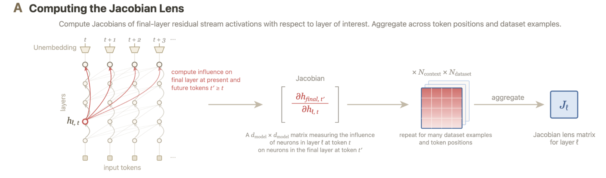
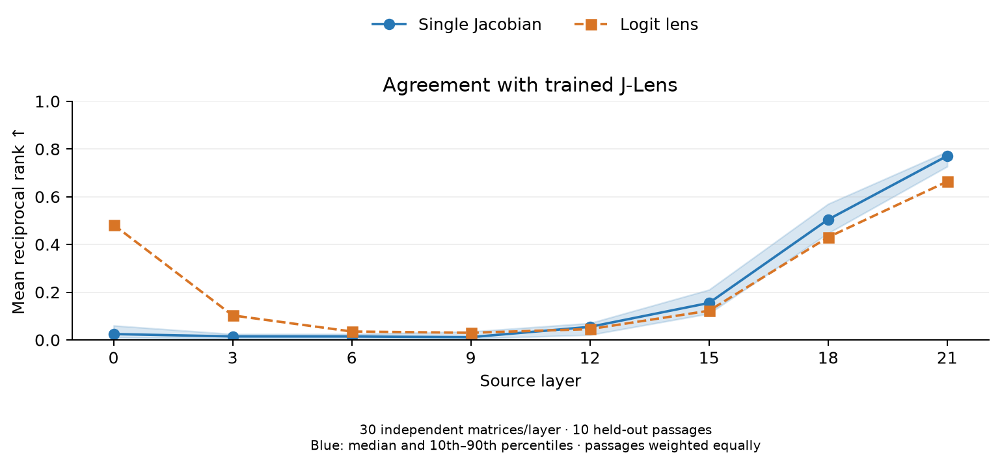
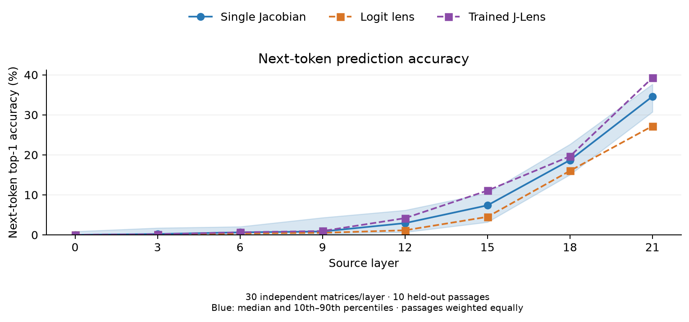

My Attempt to Explain the Jacobian Lens:
A Single Jacobian Already Works
1. What is a Jacobian Lens?
Anthropic’s Jacobian Lens (J-Lens) reads intermediate activations as vocabulary scores. Its readouts can reveal concepts involved in intermediate computation, including information the model does not immediately output.
Panel A below, from 2.1 The Jacobian Lens, illustrates the starting point: measure how a small change at an intermediate activation affects final-layer activations at the current and future token positions.

For source position $t$ at layer $\ell$ and target position $t'$ at final layer $L$, that relationship is a Jacobian:
J-Lens aggregates these Jacobians across token positions and dataset examples to obtain one matrix $J_\ell$ per layer.
To inspect an activation:
The highest-scoring tokens suggest concepts represented in the intermediate activation.
But why it works? We need to interpret this new interpretability tool.
2. Averaging is useful, but not the entire story
A Mathematical Theory of the Jacobian Lens explains what survives Jacobian averaging: responses that are strong and consistently oriented across token lags and contexts. Responses that disagree can cancel.
But another question comes first: why can a Jacobian measured in one situation decode an activation from another unrelated situation at all?
Even a single same-position Jacobian seems to contain some reusable transport structure.
3. A single Jacobian matrix is already amazing
3.1 A tiny experiment
We computed individual same-position Jacobians in Qwen3.5-2B and applied each as a lens to unrelated passages. We tested 30 matrices at each of eight layers, using ten held-out passages.
At each evaluation position, a trained J-Lens supplied a reference token: its highest-scoring token at that position. We measured where the single-Jacobian lens and logit lens ranked that token. At layer 12 and the later tested layers, the median single-Jacobian readout outperformed the logit lens. The benefit became more consistent at later layers.

For a concrete layer-21 example, the measurement passage included:
The museum opened its doors shortly after sunrise. Inside, a curator carefully arranged pottery, maps, and ancient tools in glass cases...
The single Jacobian was measured at “ glass,” position 23, from its layer-21 activation to its layer-23 final activation at the same position:
The unrelated evaluation passage described making soup:
... Taste before adding salt, and finish with fresh herbs just before serving the meal.
At “ fresh,” position 39, the three readouts were:
| Readout | Top six tokens, in order |
|---|---|
| Trained J-Lens | herbs, parsley, basil, lemon, peas, greens |
| Single Jacobian | herbs, parsley, lemon, basil, peas, spinach |
| Logit lens | corri, bas, cor, basil, бази, herbs |
The trained lens’s top token, “ herbs,” ranks first with the single Jacobian and sixth with the logit lens. Using reciprocal rank, defined as $1/\text{rank}$, the single Jacobian scores 1, while the logit lens scores approximately 0.17.
The previous experiment measures agreement with the trained J-Lens. If we directly measure next-token prediction accuracy, here is the result:

These experiments suggest that some structures underlying useful J-Lens behavior—such as more accurate next-token prediction—already exist in each same-position Jacobian before averaging. But how?
3.2 How one matrix connects meaningful directions
The Linear Representation Hypothesis suggests that some concepts can be represented by directions: adding a concept vector to an activation can strengthen that concept.
Writing $J$ for one individual Jacobian, with its layer and position indices omitted, the local response to a small addition along any direction $v$ is:
Thus, the same matrix maps every candidate concept direction to its local effect on the final activation.
Consider an arbitrary token. The model assigns it a score by comparing the final activation with the token’s unembedding vector $w$. This gives us a direction in the final-layer activation direction associated with that token.
The predicted change $\epsilon Jv$ can be compared with this final-layer activation direction. A positive projection increases the token’s score, ignoring final normalization:
The same expression can be written as $\epsilon(J^\top w)^\top v$. The vector $J^\top w$ identifies the intermediate-layer direction whose addition most strongly increases the token’s score for a fixed small perturbation size, under this approximation.
The amazing part is that this one single Jacobian matrix can do this for every vocabulary token: each unembedding vector supplies a label for one downstream effect.
The chain is: add an intermediate direction → change the final activation → change a token’s score. Token text gives us a convenient label for that effect.
3.3 Same-position Jacobian and future-position Jacobian
A same-position Jacobian measures how a change at position $t$ affects the final-layer activation at that same position. Because this final activation is used to predict the next token, a same-position lens behaves more like a next-token predictor, as we saw in Section 3.1.
A future-position Jacobian measures how the same change affects a later position $t'>t$. Its behavior is more complicated: a small change in the current activation can make the model more likely to talk about that topic later. This may be related to the lag coherence described in A Mathematical Theory of the Jacobian Lens, where effects that remain coherent across future positions survive averaging.
Standard J-Lens averages same-position and future-position Jacobians together, but here we tried averaging them separately, forming a same-position lens and a future-only lens. The following views compare both with the standard J-Lens on the same generated answer; each opens at the start of the generated continuation:
4. Beyond a vocabulary lens
The Jacobian is not limited to token-labelled output directions. For any final-layer direction $u$, including directions that do not correspond to individual vocabulary tokens, the corresponding intermediate sensitivity is $J^\top u$.
We could choose $u$ from a concept probe, a contrast between conditions, a learned feature, or a singular vector identifying a strong transport channel. Such directions need experiments to establish their meaning, but need not have a single-token name.
Tokens give this structure names. The Jacobian may let us trace how concepts are carried, transformed, and made available for future computation.